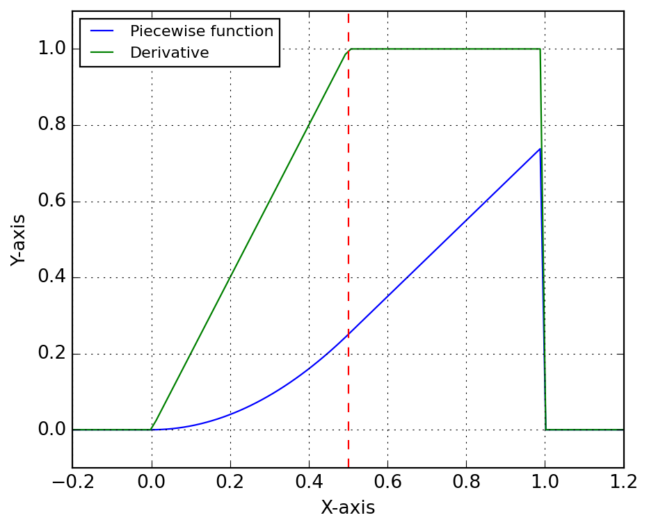
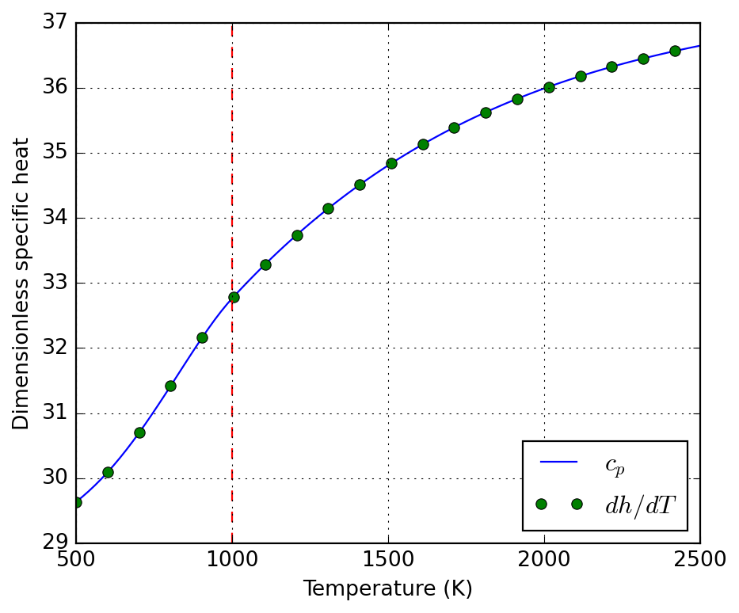
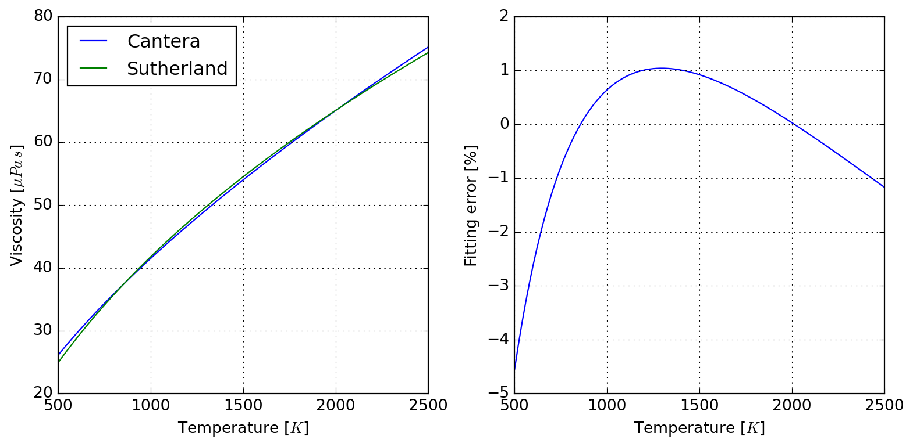
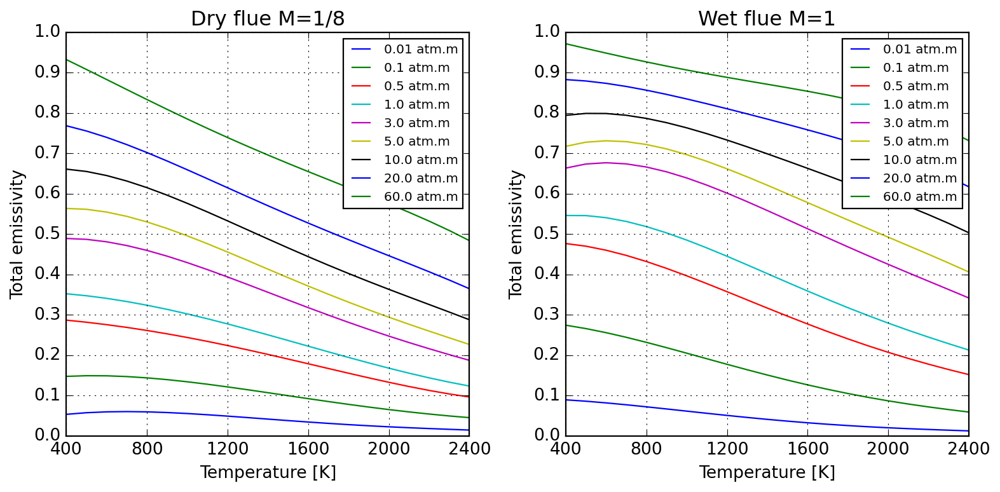

Convert a Cantera composition string to dictionary.
Parameters
Y : str
Composition specification string, e.g. “O2: 1, N2: 3”.
species_names : list[str] = []
List of valid species names for validation. If provided, only species in this list will be included in the output dictionary. If not provided, all species will be included.
sol : cantera.composite.Solution | cantera.composite.Quantity
Cantera solution object for report generation.
specific_props : bool=True
If true, add specific heat capacity and enthalpy.
composition_spec : str='mass'
Composition units specification, mass or mole.
selected_species : list[str] = []
Selected species to display; return all if a composition specification was provided.
show_mass : bool='False'
If true, add mass of quantity to report if sol is a ct.composite.Quantity.
data = solution_report(solution, specific_props=True, composition_spec="mass", selected_species=[])print(tabulate(data))
---------------------- -------- ------------
Temperature K 273.15
Pressure Pa 101325
Density kg/m³ 1.28735
Specific enthalpy J/(kg.K) -25114.9
Specific heat capacity J/(kg.K) 1004.95
mass: AR - 0.01
mass: N2 - 0.78
mass: O2 - 0.21
---------------------- -------- ------------
Because sometimes Cantera lacks hard-copy utilities for certain classes, we provide simple wrappers that create new instances and set the state to the same of the source object. Nothing checked, nothing tested. A first of this kind is copy_solution, illustrated below:
Common daily work activity for the process engineer is to perform mass balances, but wait, …, gas flow rates are generally provided under normal conditions, and compositions may vary, so you need to compute normal densities first… whatever. This class provides a calculator wrapping a Cantera solution object so that your life gets easier.
NoteNormalFlowRate
NormalFlowRate( mech : str| pathlib.Path,*, X : str|dict[str, float] |None=None, Y : str|dict[str, float] |None=None, T_ref : float=273.15, P_ref : float=101325.0, name : str|None=None ) ->None:
Compute normal flow rate for a given composition.
This class makes use of the user defined state to create a function object that converts industrial scale flow rates in normal cubic meters per hour to kilograms per second. Nothing more, nothing less, it aims at helping the process engineer in daily life for this quite repetitive need when performing mass balances.
Parameters
mech : str| pathlib.Path
Path to Cantera mechanism used to compute mixture properties.
X : str|dict[str, float] |None=None
Composition specification in mole fractions. Notice that both X and Y are mutally exclusive keyword arguments.
Y : str|dict[str, float] |None=None
Composition specification in mass fractions. Notice that both X and Y are mutally exclusive keyword arguments.
T_ref : float=273.15
Reference temperature of the system. If your industry does not use the same standard as the default values, and only in that case, please consider updating this keyword.
P_ref : float=101325.0
Reference pressure of the system. If your industry does not use the same standard as the default values, and only in that case, please consider updating this keyword.
name : str|None=None
Name of phase in mechanism, if more than one are specified within the same Cantera YAML database file.
Its simples use case is as follows:
nfr = NormalFlowRate("airish.yaml")print(f"Convert 1000 Nm³/h to {nfr(1000.0):.5f} kg/s")
Convert 1000 Nm³/h to 0.35903 kg/s
If the database file default composition does not suit you, no problems:
nfr = NormalFlowRate("airish.yaml", X="N2: 1")print(f"Convert 1000 Nm³/h to {nfr(1000.0):.5f} kg/s")
Convert 1000 Nm³/h to 0.34718 kg/s
You can also print a nice report to inspect the details of internal state. For more, please check its API documentation.
print(nfr.report())
|------------------------|----------|--------------|
| Temperature | K | 273.15 |
| Pressure | Pa | 101325 |
| Density | kg/m³ | 1.24985 |
| Specific enthalpy | J/(kg.K) | -25864.9 |
| Specific heat capacity | J/(kg.K) | 1035.52 |
| mass: N2 | - | 1 |
3.1.4 Plug-flow reactors
3.1.5 PlugFlowAxialSources
NotePlugFlowAxialSources
PlugFlowAxialSources( n_reactors : int, n_species : int ) ->None:
Provides a data structure for use with PlugFlowChainCantera.
Helper data class for use with the solution method loop of the plug-flow reactor implementation. It provides the required memory for storage of source terms distributed along the reactor.
Parameters
n_reactors : int
Number of reactors in chain.
n_species : int
Number of species in mechanism.
Q : NDArray[np.float64] =None
Array of external heat source [W].
m : NDArray[np.float64] =None
Array of axial mass source terms [kg/s].
h : NDArray[np.float64] =None
Array of enthalpy of axial mass source terms [J/kg].
Y : NDArray[np.float64, np.float64] =None
Array of mass fractions of axial mass source terms [-].
3.1.5.1 PlugFlowChainCantera
NotePlugFlowChainCantera
PlugFlowChainCantera( mechanism : str, phase : str, z : numpy.ndarray[tuple[typing.Any, ...], numpy.dtype[numpy.float64]], V : numpy.ndarray[tuple[typing.Any, ...], numpy.dtype[numpy.float64]], P : float=101325.0, K : float=1.0, smoot_flux : bool=False, cantera_steady : bool=True ) ->None:
Plug-flow reactor as a chain of 0-D reactors with Cantera.
Parameters
mechanism : str
Name or path to Cantera mechanism to be used.
phase : str
Name of phase to simulate (not inferred, even if a single is present!).
z : numpy.ndarray[tuple[typing.Any, ...], numpy.dtype[numpy.float64]]
Spatial coordinates of reactor cells [m].
V : numpy.ndarray[tuple[typing.Any, ...], numpy.dtype[numpy.float64]]
Volumes of reactor cells [m³].
P : float=101325.0
Reactor operating pressure [Pa].
K : float=1.0
Valve response constant (do not use unless simulation fails).
smoot_flux : bool=False
Apply a smoot transition function when internal stepping is performed; this is intended to avoid unphysical steady state approximations.
cantera_steady : bool=True
If true, use Cantera’ s advance_to_steady_state to solve problem; otherwise advance over meaninful time-scale of the problem.
Wrapper to allocate properly dimensioned solver data.
Parameters
pfr : PlugFlowChainCantera
Reactor for which data is to be allocated.
3.2 Energy models
This module is concerned with providing classes for computation of energy sources; these are mostly related to estimation of fuel consumption or integration to another simulation modules. Hereafter we illustrate the in cascading complexity the available energy sources. Some of these are simple wrapper around features provided by the combustion utilities.
3.2.1 CombustionAtmosphereCHON
A common need in industry is to evaluate the real heating value from a gas composition reported by the supplier. This is the main goal of CombustionAtmosphereCHON, which has a very simple API provided below:
Built upon CombustionAtmosphereCHON, CombustionPowerSupply performs the basic calculations for retrieving required flow rates from a given power specification; this proves very handy for the CFD engineer.
Simplest of relaxation methods; assume you have a new updated solution \(A_{new}^{\star}\) for a problem whose past state was \(A_{old}\), then the manager will ensure the following relaxation will be applied to compute the next solution state \(A_{new}\) to be used in whatever you are computing:
Notice that in this formulation, \(\alpha\) (or alpha in the API) represents the fraction of old solution to be used in the smearing process. Below we illustrate the effect of a step function \(H\) valued at 10 from the begining over consecutive updates (here we do not test for convergence, as that is problem specific and for this simple case the required number of steps could be evaluated by hand, take some time to try!).
Check stabilization towards a constant value along iterations.
Parameters
n_vars : int
Number of variables to be checked in problem.
min_iter : int=1
Minimum number of iterations before considering converged.
max_iter : int=1000000
Maximum number of iterations before considering failure.
patience : int=10
Number of consecutive convergences before declaring convergence.
rtol : float=1e-10
See numpy.isclose for details.
atol : float=1e-20
See numpy.isclose for details.
equal_nan : bool=False
See numpy.isclose for details.
log_iter : bool=False
If true, log convergence message when achieved.
Notecall
__call__(self : Any, state : numpy.ndarray[tuple[typing.Any, ...], numpy.dtype[numpy.float64]] ) ->bool:
Check if all variables have stabilized at current iteration.
Parameters
state : numpy.ndarray[tuple[typing.Any, ...], numpy.dtype[numpy.float64]]
Current solution state to be checked for convergence.
Noten_iterations
n_iterations(self : Any): ->int:
Provides access to number of iterations performed.
3.3.1.3 ComposedStabilizedConvergence
NoteComposedStabilizedConvergence
ComposedStabilizedConvergence( n_arrs : int,**kwargs : Any ):
Wrapper for checking stabilization of several arrays.
See StabilizeNvarsConvergenceCheck for keyword arguments; these are shared by all tested arrays. It is always possible to compose your own convergence checker using individual instances for more control over setup.
Provides access to number of iterations performed.
3.4 Symbolic functions
This module contains utilities for working with symbolic functions, especially in the context of engineering problems treated by Majordome models. It is mostly a wrapper around CasADi, organizing symbolic operations and providing additional functionality for function manipulation in a physical context.
3.4.1 PiecewiseFunction
A major issue when working with symbolic expressions and real-world data is that they do not support flow-control constructs like if statements. This is a problem when we want to represent functions that are defined piecewise, especially when algorithmic differentiation is involved.
As an example, take the parameterization of thermodynamic properties of chemical species. For quantitative purposes, to ensure high accuracy, researchers have found that it is best to use different polynomial fits for different temperature ranges. This means that the thermodynamic properties of a species are defined as piecewise functions of temperature, which is a problem when we want to use them in a symbolic context.
To tackle this issue in certain contexts, PiecewiseSymbolicFunction provides an interpolation between different ranges of the domain of a function. Internally it makes use of Heaviside functions to ensure that the function is continuous. This is not a perfect solution, as it does not guarantee differentiability at the breakpoints, but it is a good compromise between accuracy and simplicity. It is also worth noting that this class is not meant to be used in a general context, but rather in specific contexts where the function is known to be well-behaved.
Compose a symbolic piecewise function with CasADi.
Parameters
breakpoints : list[float]
List of breakpoints where the function changes.
functions : list[typing.Any]
List of functions to apply between breakpoints. The number of functions must be one less than the number of breakpoints.
Let’s illustrate its use with a simple example. We define two functions f and g, and we want to create a piecewise function that is equal to f for x < 0.5 and equal to g for x >= 0.5. Functions have being created such that they evaluate to the same value at the breakpoint, as the practical case that led to the class development, i.e. NASA-parameterization of thermochemical properties. Below we show how to create the piecewise function, evaluate it numerically and symbolically, and compute its derivative symbolically.
# Define two simple functions:f =lambda x: x**2g =lambda x: f(0.5) + (x -0.5)# Create the piecewise function:F = PiecewiseSymbolicFunction([0, 0.5, 1], [f, g])# Evaluate numerically:x = np.linspace(-0.2, 1.2, 100)y = F(x)# Evaluate symbolically:T = SX.sym("T")Y = F(T)# Create a function for evaluating the derivative:ydot = Function("fdot", [T], [jacobian(Y, T)])
Below we plot the piecewise function and its derivative. The function is continuous, but the derivative is not, as expected, although the transition is handled smoothly by the Heaviside functions. The red dashed line indicates the breakpoint at x = 0.5, where the function transitions from f to g.

3.4.2 Species thermodynamics
Notesymbolic_thermo_factory
symbolic_thermo_factory( species : Species, T : SX ) -> AbstractSymbolicThermo:
Create an AbstractSymbolicThermo object.
Parameters
species : Species
Cantera species object, with NASA7 thermodynamic data.
T : SX
Temperature variable (symbolic).
Suppose you need to create a symbolic representation of the NASA7 thermodynamic parameterization of molecular nitrogen, species of index 47 in the GRI-Mech 3.0 mechanism shipped with Cantera. Let’s start by loading and retrieving the thermodynamic data for this species.
gas = ct.Solution("gri30.yaml")species = gas.species()[47]thermo = species.thermo
Below we instantiate SymbolicThermo with the input data of the species. It is important to emphasize here that when building more complex systems, generally one should share the symbolic variables, e.g. temperature, across the different components of the system. For this reason, the constructor of symbolic thermodynamic classes expect the temperature symbol to be provided, instead of trying to create it internally; this is a design choice that will improve code robustness when handling mixtures and avoid many of the pitfalls of symbolic programming.
T = SX.sym("T")nasa7 = symbolic_thermo_factory(species, T)
NotePractical usage
You could instead directly instantiate Nasa7Thermo with the input data, but using the factory method SymbolicThermo.from_species is a better choice, as it will allow you to easily switch to a different thermodynamic model. Furthermore, it is the safe choice for loading entire databases.
nasa7 = Nasa7Thermo(T, species.thermo.input_data)# This is just syntactic sugar for the above:nasa7 = Nasa7Thermo.from_species(species, T)
Here we illustrate the use of algorithmic differentiation to compute the derivative of the specific enthalpy with respect to temperature.
The above derivative is then confronted to the specific heat below:

Finally, we compare the deviations between symbolic and numerical (Cantera) evaluation of the thermodynamic functions. This is not for error analysis, but a proof of correctness of the symbolic implementation.
# XXX: Cantera evaluates quantities per kmol! Divide by 1000 to get# per mol, as the symbolic implementation does.c_ct = np.array([0.001* species.thermo.cp(T) for T in T_num])h_ct = np.array([0.001* species.thermo.h(T) for T in T_num])s_ct = np.array([0.001* species.thermo.s(T) for T in T_num])error_c = np.mean(np.abs(nasa7._cp(T_num) - c_ct))error_h = np.mean(np.abs(nasa7._h(T_num) - h_ct))error_s = np.mean(np.abs(nasa7._s(T_num) - s_ct))error_c, error_h, error_s
Nasa7Thermo( T : SX, input_data : dict[str, typing.Any] ) ->None:
NASA7 thermodynamic parameterization.
This class does not implement Horner polynomial evaluation, as the main use case is to create symbolic expressions that are then evaluated by CasADi, which can handle polynomial evaluation efficiently. This is intentional and allows for easy verification.
It aims at providing a similar interface as SpeciesThermo from Cantera, from which it retrieves the data. That means, molar properties are provided through cp, h, and s properties.
Parameters
T : SX
Temperature variable (symbolic).
input_data : dict[str, typing.Any]
NASA7 thermodynamic data, as provided by Cantera’s SpeciesThermo property input_data.
Notespecific_heat
specific_heat( T : Any, a : list[float], symbolic : bool=False ) -> casadi.casadi.Function | casadi.casadi.SX:
Compose NASA7 specific heat parameterization.
Parameters
T : Any
Temperature variable (symbolic or numeric).
a : list[float]
List of 7 NASA7 coefficients.
symbolic : bool=False
Whether to return a symbolic expression.
Noteenthalpy
enthalpy( T : Any, a : list[float], symbolic : bool=False ) -> casadi.casadi.Function | casadi.casadi.SX:
Compose NASA7 specific enthalpy parameterization.
Parameters
T : Any
Temperature variable (symbolic or numeric).
a : list[float]
List of 7 NASA7 coefficients.
symbolic : bool=False
Whether to return a symbolic expression.
Noteentropy
entropy( T : Any, a : list[float], symbolic : bool=False ) -> casadi.casadi.Function | casadi.casadi.SX:
Compose NASA7 specific entropy parameterization.
Parameters
T : Any
Temperature variable (symbolic or numeric).
a : list[float]
List of 7 NASA7 coefficients.
symbolic : bool=False
Whether to return a symbolic expression.
Notecompose
compose( cls : Any, name : str, T : casadi.casadi.SX | numpy.ndarray[tuple[typing.Any, ...], numpy.dtype[numpy.float64]] |float, data : list[list[float]], symbolic : bool=False ) ->list[casadi.casadi.Function | casadi.casadi.SX | numpy.ndarray[tuple[typing.Any, ...], numpy.dtype[numpy.float64]] |float]:
Compose a list of NASA7 functions for given data.
Parameters
name : str
Name of the function (“specific_heat”, “enthalpy”, or “entropy”, i.e the static methods of this class).
T : casadi.casadi.SX | numpy.ndarray[tuple[typing.Any, ...], numpy.dtype[numpy.float64]] |float
Temperature variable (symbolic).
data : list[list[float]]
List of NASA7 coefficient sets for each temperature range.
symbolic : bool=False
Whether to return symbolic expressions or CasADi functions. Only relevant if T is symbolic.
Notefrom_species
from_species( cls : Any, species : Species, T : SX ) -> typing.Self:
Create a Nasa7Thermo object from a Cantera species.
Parameters
species : Species
Cantera species object, with NASA7 thermodynamic data.
T : SX
Temperature variable (symbolic).
3.4.3 Species transport
Notesymbolic_transport_factory
symbolic_transport_factory( species : Species, T : SX ) -> AbstractSymbolicTransport:
Create an AbstractSymbolicTransport object.
Parameters
species : Species
Cantera species object, with transport data.
T : SX
Temperature variable (symbolic).
3.4.4 Kinetics parameterization
3.4.5 Solution properties
3.5 Transport properties
3.5.1 EffectiveThermalConductivity
In some fields of research, such as porous media or composite materials, the evaluation of effective thermal properties are key for simulation of macroscopic application cases. Class EffectiveThermalConductivity implements (static) thermal conductivity models for this sort of applications, including:
For porous media (packed bed in the context) with enhanced radiative effects the model by (Singh and Kaviany 1994) as discussed by (Kee et al. 2017) is implemented (EffectiveThermalConductivity.singh1994).
Its name is quite long, let’s start by getting an alias before evaluating the desired models:
etc = EffectiveThermalConductivity()
Using Maxwell approximation, we could estimate the the effective thermal conductivity of a packed bed of particles in a matrix of air; assume particles loosly embeded in air and the following properties; the computed effective thermal conductivity is shown to approach the air limit:
For the limit of high temperatures, it is usually important to account for particle-particle radiation heat transfer; this introduces a \(T^3\) dependence on temperature, as one should expect by linearizing Stefan-Boltzmann law.
Please notice that these models compute different things; while Maxwell approximation computes the medium properties (to approximate matrix-inclusion as a single domain), Singh’s model accounts only for solids properties. One might wish to combine them (warning: unverified validity!) to evaluate overall medium thermal conductivity. See the references in the class documentation for further discussion, specially the extension proposed by Kiradjiev (2019), which leads to a result similar to the assymptotic behavior displayed below.
Due to kinetic theory implications, gas thermal conductivity tend to have a positive slope in temperature; the following illustrates how this can be accounted for and the roughly linear behaviour introduced when computing medium properties within air.
A dimensionless numbers calculator is provided for gas flows; it currently has a certain number of groups which are all evaluated by definition (which might change according to your field, please check the docs). The mechanics of using the class can be resumed to:
loading a mechanism file (Cantera YAML)
setting the state of the solution
evaluating the required properties
(optional) displaying a report
The meaning of the tuple of arguments provided to set_state is specified by tuple_name="TPX", which defaults to temperature, pressure, and molar proportions. Any triplet allowed by Cantera can be specified here.
If you prefer to have direct access to the internal solution, you can set properties as usual in Cantera, but you need to keep in mind to call update() to refresh the internal state of the calculator. Every time the properties are updated, the internal buffer of computed dimensionless numbers is refreshed, as you migth notice in the following table.
To the author’s knowledge, there is no standard tool to convert Cantera transport data to Sutherland parameters for use with OpenFOAM, what led to the motivation to develop SutherlandFitting. This simple class wraps a Cantera solution object, which it makes use for fitting Sutherland parameters to export as a table (to be used elswhere), and also allows for retrieving a converted database in OpenFOAM compatible format. The following example should be self-explanatory:
If needed, it is also possible to have direct access to the viscosity data used in parameter fitting:
sutherland.viscosity.head()
T
O2
N2
0
500.000000
30.045456
26.123142
1
520.202020
30.886884
26.845049
2
540.404040
31.713820
27.554780
3
560.606061
32.527146
28.253075
4
580.808081
33.327662
28.940602
Because RMSE compresses all the error in a single value, you can check graphically where the deviations happen in the interval:
plot = sutherland.plot_species("N2")

Finally, it also responds to its initial goal of exporting values in OpenFOAM format:
print(sutherland.to_openfoam())
/* --- RMSE 0.5274842993902649 ---*/
"O2"
{
transport
{
As 1.8738763185e-06;
Ts 2.2932121082e+02;
}
}
/* --- RMSE 0.4701517988286822 ---*/
"N2"
{
transport
{
As 1.6193495479e-06;
Ts 2.2614180620e+02;
}
}
3.5.4 WSGGRadlibBordbar2020
Radiative properties of gases are often required when participating media characteristics imply so. Here we implement the WSGG model of Sadeghi et al. (2021) in class WSGGRadlibBordbar2020. The basic usage of the model to estimate total emissivity is done as follows:
model = WSGGRadlibBordbar2020()model(L=1, T=1000, P=101325, x_h2o=0.18, x_co2=0.08, fvsoot=0.0)
np.float64(0.18368577452587137)
3.5.4.1 Validation of Bordbar WSGG implementation
Evaluation of the model against original source of Bordbar (2014) is satisfactory, as follows:

Absorption coefficients for pure substances only reproduce approximately values reported by Bordbar (2020).
Below we illustrate the application of WSGGRadlibBordbar2020 to predict the emissivity of \(x\mathrm{H_2O}-(1-x)\mathrm{CO_2}\) mixtures over a broad temperature range applicable to the analysis of combustion processes. One observes an important participation of flue gases, especially at lower temperatures.
Hanein, Theodore, Frederik P. Glasser, and Marcus N. Bannerman. 2017. “One-Dimensional Steady-State Thermal Model for Rotary Kilns Used in the Manufacture of Cement.”Advances in Applied Ceramics 116 (4): 207–15. https://doi.org/10.1080/17436753.2017.1303261.
Kee, Robert J., Michael E. Coltrin, Peter Glarborg, and Huayang Zhu. 2017. Chemically Reacting Flow Theory, Modeling, and Simulation: Theory, Modeling, and Simulation. Wiley & Sons, Incorporated, John.
Kiradjiev, Kristian B., Svenn Anton Halvorsen, Robert A. Van Gorder, and Sam D. Howison. 2019. “Maxwell-Type Models for the Effective Thermal Conductivity of a Porous Material with Radiative Transfer in the Voids.”International Journal of Thermal Sciences 145: 106009. https://doi.org/10.1016/j.ijthermalsci.2019.106009.
Sadeghi, Hosein, Simo Hostikka, Guilherme Crivelli Fraga, and Hadi Bordbar. 2021. “Weighted-Sum-of-Gray-Gases Models for Non-Gray Thermal Radiation of Hydrocarbon Fuel Vapors, CH4, CO and Soot.”Fire Safety Journal 125 (October): 103420. https://doi.org/10.1016/j.firesaf.2021.103420.
Singh, B. P., and M. Kaviany. 1994. “Effect of Solid Conductivity on Radiative Heat Transfer in Packed Beds.”International Journal of Heat and Mass Transfer 37 (16): 2579–83. https://doi.org/10.1016/0017-9310(94)90295-X.